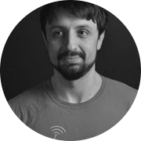
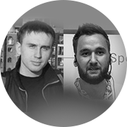

ODESSA JS 2016
Время встретить старых и новых друзей
2-3 июля / ГРИБОВКА, отель "ЧЕРНОЕ МОРЕ БУГАЗ" / Лето. Море. JavaScript.
Цена билета
3500 грн
3500 грн
Скидка студентам 50%
Скидка для людей с ограниченными возможностями 50%
В стоимость билета
входит:
входит:
Посещение
Lighting Talks pre-party
1 июля
Lighting Talks pre-party
1 июля
Участие
в конференции 2-3 июля
(2 потока докладов)
в конференции 2-3 июля
(2 потока докладов)
Вкусные
обеды и кофе-брейки
обеды и кофе-брейки
Групповой трансфер
на автобусе
(в субботу и воскресенье, утром
и вечером из Одессы в отель и обратно)
на автобусе
(в субботу и воскресенье, утром
и вечером из Одессы в отель и обратно)

Участие во всех
розыгрышах и активностях
конференции
розыгрышах и активностях
конференции

Посещение afterparty
на берегу моря
на берегу моря

Конференц-пакет
участника
участника
Информация
Препати
1 июля ( в пятницу) ждем вас к 18:00 в Компьютерной Академии Шаг, по адресу:
г. Одесса, ул. Еврейская, 3, 3 эт, Конференц-зал 315.
2 июля в отеле Черное Море Бугаз в Грибовке
Утренняя йога у отеля Черное Море 9:30
Начало регистрации 10:00
Начало конференции 11:00
Афтепати начинается сразу после окончания докладов в субботу
3 июля в отеле Черное Море Бугаз в Грибовке
Утренняя йога у отеля Черное Море 9:15
Начало конференции 10:20
Окончание конференции 18:00
Трансфер
Автобусы заберут участников конференции утром 2 и 3 июля от центрального жд вокзала Одессы (ориентир), время с 7:00 до 9:00.
Доклады
Martin Naumann
WebGL, basic computer graphics for frontend devs
The talk will explain how rendering works and what performance issues may be rendering related and what to do about them.
Артем Тритяк
Forward to the Past or data-fetching in React.js
We have to go back and make new things better. Why do we need data fetching in React views?
Вадим Макеев
Grid Layout
Верстаете, как юный бог, на флексах или пасёте флоуты по углам — неважно. Когда-нибудь вам придётся перейти на грид-раскладки. Не просто инлайн-блоки на стероидах, как флексы, а принципиально новую систему, созданную специально для сложных раскладок. Понятное введение и примеры использования для реальных задач.
Денис Стоянов
Rx.js пожоще
Из чего состоит Rx, базовые принципы и понятия функциональное и реактивного программирования, написание своего Rx.
Ингвар Степанян (@RReverser)
Intro to Optimizing Compilers
Have you ever wondered how modern JavaScript engines word under the hood? Why some of them are faster on particular cases and, on the other hand, what do they all have in common? Or maybe you want to learn how to debug the intermediate representation or even low-level machine code your JavaScript was turned into in any chosen engine? Or maybe you are more interested in why & how those IRs are used for optimizations? Welcome to my talk.
Денис Зайченко
Angular 2 Universe
Что происходит в ng комьюнити? Какие полезные библиотеки уже написаны? Что нам дает TypeScript? Какие киллер фичи идут из коробки?
Андрей Кучеренко
SmartHouse - практическое применение IoT в уютной JS разработке
В этом докладе я расскажу о опыте разработки системы умного дома. Опишу архитектуру и покажу примеры реализации распространенных задач, возникающих перед разработчиками, создающими решения на базе IoT.

Александр Завьялов
Пишем код, тягаем штангу
Что позволяет разработчику сохранять свежесть мысли и уверенность в себе? Что не дает лени взять верх и заставляет проснуться утром? Что наполняет нас энергией и планами на будущий день? Поговорим о необычном: о влиянии спорта на нашу жизнь и работу. Спортзал, бассейн, танцы — любое спортивное хобби дарит нам силы для ежедневной рутины и новых достижений в мире фронтенд разработки.
Посещение доклада дает +10 к жиму.

Александр Лябах
What professionals can learn from coding games?
I want to talk about games. Games that allow you and require you to use your coding skills. As a founder of one of these games for coders, I can say that besides the obvious of having fun, there are a lot of things you can learn from them -- even if you are an experienced coder.

Филип Шурпик
Offline first in React Native and Redux
В своем докладе я хочу рассказать о своем опыте создания архитектуры offline-first mobile приложения с использованием React и Redux. Будет рассмотрена как разработка React Native, так и Cordova + React приложений.
Сергей Рубанов (@chicoxyzzy)
Что не так с web и как с этим жить
В 2015 году JS обрел гармонию. В 2016 гармонию обрели браузеры и NodeJS. Несмотря на это, web до сих пор несовершенен. Но уже готовятся значительные изменения в платформе. Поговорим о WebAssembly, некоторых интересных спецификациях и выясним как со всем этим жить.
Вячеслав Слинько (@vslinko)
Relay internals, such as cache algorithm, garbage collector, algorithm of applying optimistic updates
Доклад для тех, кому интересно поглядеть на внутренности Relay. Что на самом деле скрывается за публичным API? Как Relay хранит данные? Как Relay готовит запросы?
Дима Малеев
Архитектура, или как мы куда-то не туда пошли
Well, we are in constantly changing world of JavaScript development: tons of frameworks, FRP, virtual DOM, etc. If take a look on more enterprise systems - we are storm against calm water. But does it means that it is bad on their world and good on ours? Let's have philosophical talk about current situation of JS architectures, usages of the tools, and even culture.
Кирилл Яковенко (@blia)
Стринги
Будет говорить о том, что с ES2015 в мир javascript пришли template strings(literals). Какие возможности они предоставляют и как их можно использовать для инлайнинга различных языков программирования в javascript.
Николай Беличук
Карты и картографические сервисы
Карты представляют собой реальный мир, но в гораздо меньших масштабах.Они помогают вам выяснить, где вы находитесь, как добраться туда, куда вы хотите отправиться и какие места есть рядом. Но кроме этого карты отличный инструмент для визуализации данных и один из самых быстрых способов восприятия информации.
Дмитрий Гусев
Node.js вширь и вглубь
Доклад про горизонтальное масштабирование Node.js приложений в целом, работе с репликами и шардингом MongoDB, как выжимать из железа соки и балансировать нагрузку.
Тимур Шемсединов
Node.js Macht Frei
Доклад о экспериментальном технологическом стеке и реактивной интерактивности, приходящей на смену ветхому вебу.
Ксения Редунова
ECMAScript: past, present and future
Расскажу о текущем состоянии дел в ECMAScript, что можно использовать, что где поддерживается, к чему стремится стандарт. Разберемся, получился ли "JavaScript с человеческим лицом" :)
Алекс Труш
Elm: functional programming in your browser
Elm is functional language for front-end, it is a breath of fresh air, that offers a real and substantial alternative to MV*-style frameworks. It improves upon JS by nearly eliminating runtime crashes, meaning no more "undefined is not a function". It functional neture allow you to write composeble and programmable layout that really works as you expect it to work.

Алексей Мигуцкий
Ребрендинг в продакшене
Я расскажу, как при помощи волшебной формулы "modular css + html = style guide" в сжатые сроки изменить продукт до неузнаваемости, сделать волосы мягкими и шелковистыми и не сойти с ума.
Виктор Гришенко
Sync: rocket science explained
В мире, где у каждого пользователя по нескольку устройств, даже
однопользовательские приложения нужно синхронизировать. Как Apple,
Google и Dropbox синхронизируют данные и как это делается в Swarm.js -
offline, caching, prefetch и real-time sync.

Николай Кожухаренко
Koa.js as an alternative to Express
Почему стоит выбрать Koa.js
вместо Express? А также: как генераторы помогают решить проблему обработки ошибок в NodeJS, как устроены middlewares
и "плоский" асинхронный код с библиотекой Сo.

Николай Алименков и Роман Ермаков
Excellence of Engineering Practices for Large-scale JavaScript Applications
When you work in a small collocated team many engineering practices and approaches are relatively easy to use and adapt. In large project with many teams working on the same product this task is not so simple. We want to share our experience in implementing full set of engineering practices in big product development team (more than 150 people, 10+ teams). We will cover Code Review, unit testing, TDD, functional testing, Continuous Delivery and others team coordination/knowledge sharing practices. Except theory we will show short practical demo how regular work of our FE looks like on daily basis.

Александр Черкасский
JavaScript разработчик глазами PMа
Что такое быть PMом? Стоит ли пробовать разработчику, сколько денег и другие приключения.
Сергей Поплавский
IoT Real Time Dashboards with SignalR
В ходе данного доклада мы посмотрим, как используя SignalR и ChartJS отображать данные из датчиков в режиме, приближенному к реальному времени. А в ходе демо, мы рассмотрим стек облачных сервисов Azure для работы с датчиками и исполнительными устройствами.
Юрий Шевцов
Internet of things в офисе
В своем докладе я расскажу как мы автоматизировали некоторые части офиса.